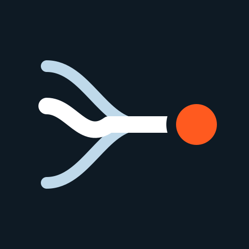

Responder o pedido de migração ao mercado livre
- Prazo
- 5 dias úteis
- Dono
- Comercial
“A distribuidora tem o prazo de até 5 dias úteis, contados a partir do recebimento da comunicação da migração…”DOU 04/11/2026 · p. 68
Identidade visual · versão Laudo
Grafite, laranja e branco, como um laudo técnico bem feito. O laranja é o sinal: marca a ação, o prazo e o trecho que importa.
01 · Marca
Dois traços céu e um branco, irregular, convergem numa reta. O ponto laranja é a tarefa.
kalman-horizontal.svg · fundo claro
kalman-horizontal-escuro.svg · fundo grafite
kalman-icone.svg · 40 × 40
kalman-wordmark.svg · palavra em contorno

kalman-app.svg · app e favicon (512)
motivo-convergencia.svg · o ícone em grande
Respiro mínimo em volta da marca igual à altura do ponto laranja × 2. Tamanho mínimo: ícone 16 px (favicon), horizontal 96 px de largura.
Recolorir o ícone, trocar o laranja do ponto, esticar, pôr sombra ou usar a palavra "kalman" digitada em vez do contorno.
02 · Cor
Página branca, texto grafite, céu para apoio. Laranja só onde algo exige ação.
Grafite#0E1A24 · --k-grafiteTexto, blocos escuros. 17.6:1 no branco.
Laranja#FF5A1F · --k-laranjaAção, grifo, prazo. Texto sobre ele: grafite (5.6:1).
Branco#FFFFFF · --k-brancoFundo da página.
Céu#BFD9EA · --k-ceuTraços, gráficos, selos.
Céu claro#EAF2F7 · --k-ceu-claroSeções, citações, chips.
Tinta 2#45525E · --k-tinta-2Texto de apoio. 8.0:1.
Tinta 3#66727D · --k-tinta-3Legenda e fonte, só no branco (4.9:1).
Grafite 2 · 3#172633 · #24384ASuperfícies e hover sobre grafite.
Cerca de 70% branco, 20% grafite, 8% céu, 2% laranja. Se o laranja passa de um elemento por tela, ele deixa de ser sinal.
Branco sobre laranja dá 3.1:1: não use em texto. Laranja como cor de texto, só em título grande (24 px ou mais) ou no ponto final.
03 · Tipografia
A sans para ler. A mono para tudo que é dado: ato, artigo, CNPJ, prazo, contagem.
Display · 600 · −3.5%
Saiu uma norma.
Título de seção · 600 · −3%
Do trecho do DOU à tarefa.
Apoio · 400 · tinta 2
A norma que muda a sua obrigação passa no meio de centenas de outras.
Dado · IBM Plex Mono 500
1.931 → 110 → 2
REN ANEEL 1.174/2026 · art. 166-A · DOU 04/11/2026, p. 68 · CNPJ 00.000.000/0001-91
04 · Componentes
CSS puro com prefixo k-. Em React com Tailwind, use as mesmas cores pelo tema.
Botões
Selos e chips
Campo
O perfil vem da Receita Federal e da ANEEL.
Confira o CNPJ: os dígitos verificadores não batem.
Card da tarefa
Responder o pedido de migração ao mercado livre
“A distribuidora tem o prazo de até 5 dias úteis, contados a partir do recebimento da comunicação da migração…”DOU 04/11/2026 · p. 68
Folha do DOU, com cantos
Resolução Autorizativa ANEEL nº 16.829/2026
“(...) em favor da Transmissora Brasrio S.A., (...) no município de São João da Barra, estado do Rio de Janeiro.”
Tabela
| Ato | Decisão | Motivo |
|---|---|---|
| REN 1.174/2026 | Aplicável | Prazo de migração ao ACL |
| REA 16.829/2026 | Descartado | Transmissão, não distribuição |
| REN 1.175/2026 | Aplicável | Open Energy, 12 meses |
Painel grafite e números
03 a 06/11/2026
Bloco de chamada
05 · Movimento e texto
Animação explica ou confirma. Nunca decora o que a pessoa usa todo dia.
Entrada
300 ms, opacidade + 12 px + desfoque 4 px, ease-out. Itens a cada 100 ms.
Saída
150 ms. Sempre menor e mais curta que a entrada.
Botão
Pressionado: escala 0.96 em 150 ms. Desabilitado não reage.
Movimento reduzido
Só opacidade. Cenas longas viram um quadro estático completo.
Frases curtas e concretas, como um vendedor experiente do setor elétrico falando com um gerente de regulação. Título até 8 palavras, no máximo 1 frase de apoio. Número sempre com fonte.
"Revolucione", "potencialize", "solução inovadora", "de ponta", "sem esforço", "o futuro da", "não é apenas X, é Y", listas de três adjetivos, emoji, travessão, exclamação, depoimento ou métrica inventada.